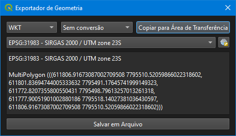

ARK-Z ARQUITETURA LTDA
FERRAMENTAS GEOSPACIAIS & CAD/GIS
Geometry Exporter · Exportador e Conversor de Geometrias

Interface de Usuário da Ferramenta Geometry Exporter
🌟 Recursos e Funcionalidades Principais
🚀 Como Utilizar o Geometry Exporter
📐 Estrutura e Formatos de Dados Suportados
MultiPolygon (((X1 Y1, X2 Y2, X3 Y3, ..., X1 Y1)))
MultiPolygon (((611806.91673087 7795510.52059866,
611801.83694744 7795491.17645741, 611772.82073558 7795498.79613257,
611806.91673087 7795510.52059866)))
🛡️ Solução de Problemas Comuns
© 2026 ARK-Z ARQUITETURA LTDA — Módulo Geospatial Exporter
Versão 2.0.0 | Módulo de Conversão Geográfica